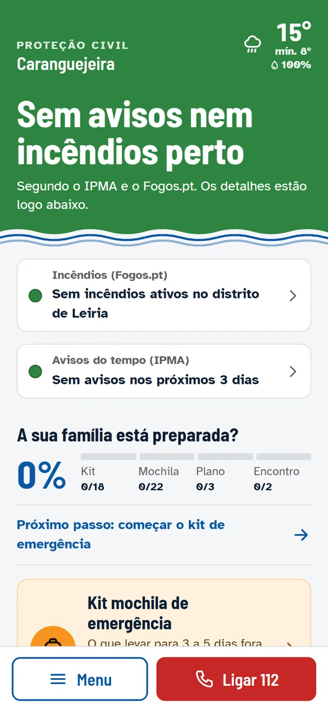
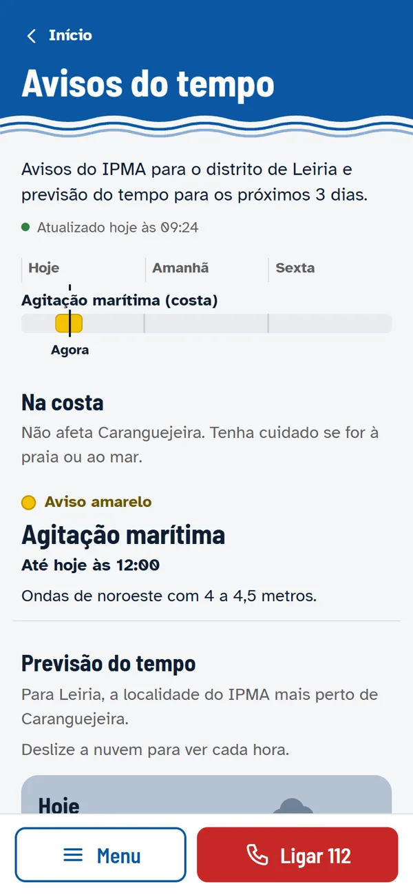
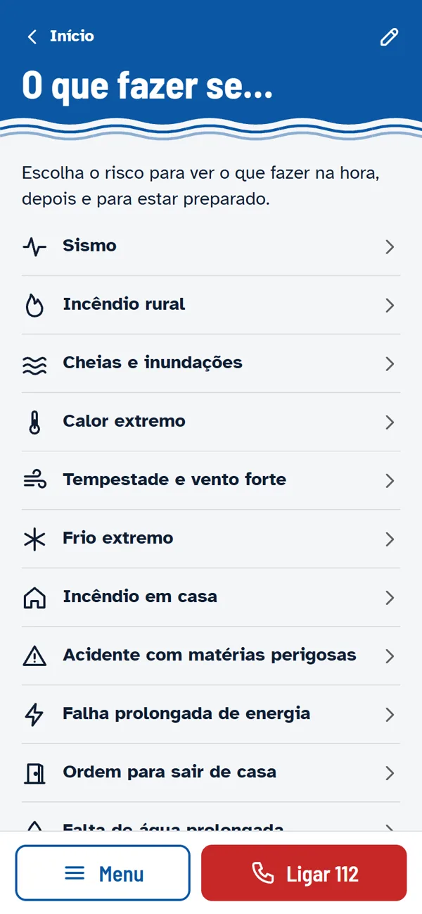

upcc.pt
A self-protection app for the parish of Caranguejeira, in Leiria: today's warnings, what to do in an emergency and a family plan, in an app anyone can install straight from the website.
- Role
- Outside developer for the local civil protection unit
- Client
- Unidade Local de Proteção Civil de Caranguejeira
- Status
- Live, installable on Android and iPhone
- Stack
- PWA
- JavaScript
- Service worker
- GitHub Actions
- GitHub Pages
- Pages CMS
- IPMA
- Fogos.pt



Why
When a storm or a wildfire hits, people need clear, local information fast, often on a bad connection. I built this app for the Unidade Local de Proteção Civil de Caranguejeira as an outside developer: the unit owns the content and the message, I build and run the app.
What it does
- Home shows the situation now: IPMA weather warnings for the district and active wildfires from Fogos.pt.
- 'What to do if…' guides for earthquakes, rural fires, floods, extreme heat, storms, cold and more, written from official guidance.
- Emergency kit and grab-bag checklists that adjust to how many people live in the house, and a family plan with meeting points.
- A drill timer and a short quiz to practise, plus 'warn the family', which sends your location by text message.
- A call-112 button always at the bottom of the screen.
Under the hood
- App
- Plain HTML, CSS and JavaScript, no framework; a service worker caches it so it opens without a connection
- Content
- Kit, contacts, guides and texts are JSON files the unit's editors change through Pages CMS forms; each save is a commit, live about a minute later
- Wildfires
- A GitHub Actions job fetches the Fogos.pt API every 10 minutes with a secret key, so the key never reaches the public app; an external timer keeps it on schedule
- Trust
- Only contacts the unit has confirmed show a number and can be called
- Hosting
- GitHub Pages on its own domain with HTTPS; installs on Android with one tap and on iPhone with a short guide